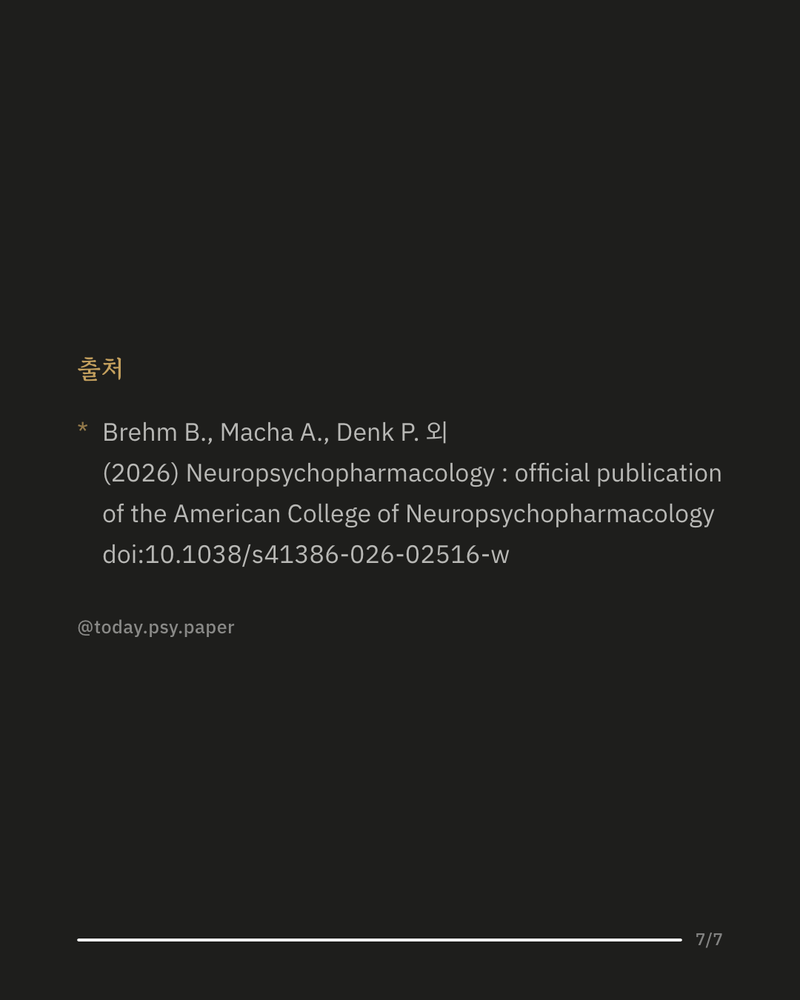

가짜 약인 걸 알려줘도 통증이나 불안이 줄어드는 '위약(플라시보) 효과'가 실제로 나타납니다. 이런 공개 위약이 왜 생기는지는 아직 명확하지 않습니다. 전통적으로 몰래 주는 위약은 '효과가 있을 것'이라는 기대감이 핵심이라고 여겨졌고, 이 기대감은 뇌의 전전두피질과 관련 있다고 알려져 있습니다. 연구팀은 이 부위에 전기 자극(tDCS)을 가해, 공개 위약도 같은 방식으로 기대감을 통해 작동하는지 실험했습니다. 112명을 공개 위약 안내를 받은 집단과 안내를 받지 않은 대조군으로 나누고, 정서적으로 힘든 사진을 보여주면서 모든 참가자에게 진짜 자극과 가짜 자극을 각각 경험하게 했습니다. 그 결과 가짜 자극 상태에서도 위약군의 정서적 고통은 줄었지만, 진짜 자극은 대조군의 고통만 줄였을 뿐 위약군의 효과를 더 키우지는 않았습니다. 이는 공개 위약이 전통적인 위약처럼 기대감만으로 설명되지 않으며, 다른 심리적 경로로 작동할 가능성을 보여줍니다. 다만 이번 실험은 정서적 사진을 이용한 단기 실험 상황으로, 실제 임상 통증이나 질환에도 같은 결과가 나타나는지는 추가 연구가 필요합니다. 출처: Neuropsychopharmacology (2026), 'Effects of prefrontal transcranial direct current stimulation on open-label placebo responses' #위약효과 #플라시보효과 #뇌과학 #심리학연구 #임상심리 #정신건강정보 #논문리뷰
python3 publish.py 42649240